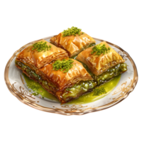

Baklava
Rich, sweet layered pastry made with nuts and soaked in syrup, a beloved Middle Eastern dessert.
üçΩÔ∏è Serves
12 pieces
⏲️ Preparation Time
30 minutes
üî• Cooking Time
40 minutes
ü•£ Ingredients
- 1 pack phyllo dough (thawed)
- 1 cup unsalted butter (melted)
- 2 cups mixed nuts (walnuts, pistachios, almonds), finely chopped
- 1 tsp ground cinnamon
- 1 cup sugar
- 1 cup water
- 1/2 cup honey
- 1 tsp lemon juice
- 1 tsp rose water (optional)
üìù Preparation
- Preheat oven to 175°C (350°F). Butter a baking dish.
- Mix chopped nuts with cinnamon. Layer 8 sheets of phyllo, brushing butter between each.
- Sprinkle nut mixture, then layer more phyllo and nuts, ending with 8 phyllo layers on top.
- Cut into diamonds or squares. Bake for 35–40 minutes until golden and crisp.
- Meanwhile, prepare syrup: boil sugar, water, lemon juice, and honey for 10 minutes. Add rose water.
- Pour syrup over hot baklava. Let soak and cool before serving.